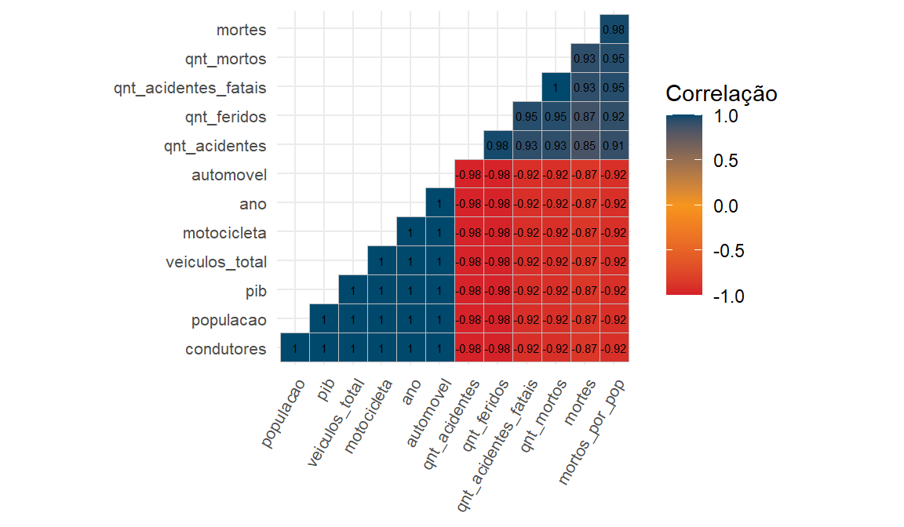
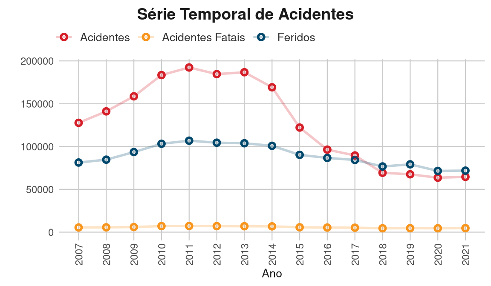
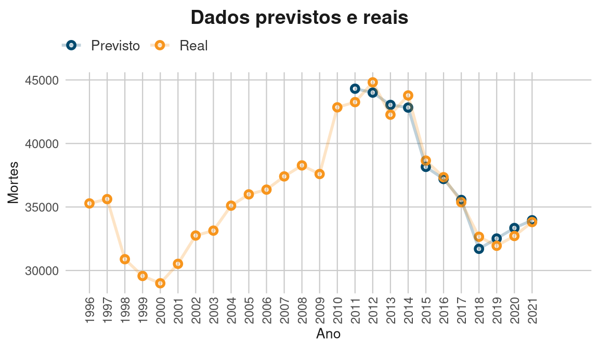
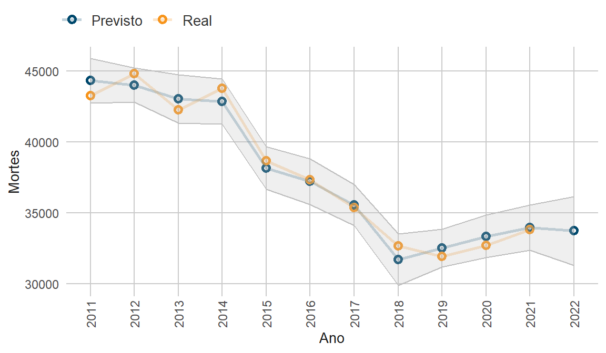
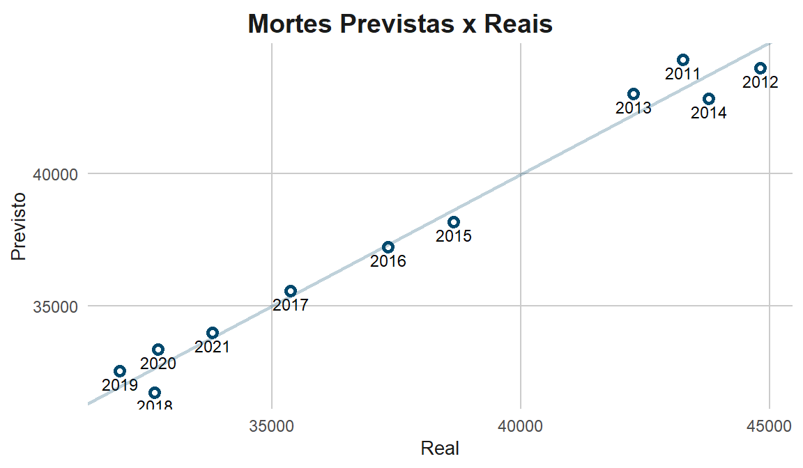

Modelo Preditivo de Mortes Viárias Anuais no Brasil
1 Introdução
O presente cenário mundial acerca de mortes e lesões relacionadas a sinistros viários posam sérios desafios à segurança pública global, e as tendências evidenciadas pelos dados contemporâneos indicam que esta realidade perdura pelo futuro observável (World Health Organization 2018). Sendo uma das causas de mortes evitáveis mais comuns no mundo, as ocorrências de acidentes afetam principalmente pedestres, ciclistas e motociclistas, além de induzir danos materiais incomensuráveis, tanto em questão de propriedade particular quanto pública. Isto estimula países a buscarem métodos estimativos sobre os efeitos sociais, econômicos e epidemiológicos da taxa de mortes viárias e como se traduzem em custos e perdas na produtividade da sociedade em geral (Rodríguez, Jattin, and Soracipa 2020).
A segurança viária é profundamente correlata ao estado de desenvolvimento de uma região, visto que é uma característica da mobilidade urbana. Entende-se que as mortes viárias dependem de diversos fatores estruturais, socioeconômicos e ambientais (Zhong-xiang et al. 2014). Assim, elevadas taxas de sinistros colaboram no diagnóstico de problemas da segurança pública geral, despertando o debate político sobre a regulamentação das normas viárias e apontando a carência dos sistemas da união em combater estes eventos.
Enquanto o desenvolvimento econômico certamente beneficia a segurança viária, observa-se que os países da Assembleia Geral das Nações Unidas têm dificuldade em atingir as metas estabelecidas em 2015 pelos Objetivos de Desenvolvimento Sustentável. Apesar da crescente adesão por itens de segurança veicular, acidentes de transporte terrestre (ATTs) permanecem como um problema de saúde pública, visto que fazem parte de um agravo que repercute por toda a sociedade (Andrade and Antunes 2019), sendo a oitava causa de óbitos em todas as faixas etárias e a principal entre indivíduos de 5 a 29 anos (World Health Organization 2018). Como previsto por modelos prévios à 2020 (Blumenberg et al. 2018), o Brasil falhou em reduzir sua mortalidade viária pela metade, como ditava a meta.
A busca pela fundamentação técnica para a proposição de políticas públicas a respeito da mobilidade segura fomenta o estudo de diversas categorias de modelos preditivos para a mortalidade, tanto para estimar o número de ocorrências quanto para avaliar a influência das variáveis consideradas. Modelos lineares multivariados são ajustados para extrair tendências sobre os critérios aferidos (Blumenberg et al. 2018; Cai, Zhu, and Yan 2015), assim como modelos preditivos baseados em cadeia de Markov (Seneta 1996; Jin, Zheng, and Geng 2020). Outras abordagens pretendem utilizar técnicas de análise de séries temporais, utilizando métodos como ARIMA (Al-Ghamdi 1995) e redes neurais artificiais (Jafari et al. 2015).
O presente estudo teve como objetivo criar um modelo linear de melhor ajuste para a previsão de mortes no trânsito em âmbito nacional no Brasil, investigando dados socioeconômicos, como o PIB e a população, extraídos pelo IBGE, assim como dados viários coletados das bases de dados da Polícia Federal Rodoviária (PRF), do Registro Nacional de Carteira de Habilitação (RENACH), do Registro Nacional de Veículos Automotores (RENAVAM) e do Sistema de Informação de Mortalidade (SIM) do Ministério da Saúde.
2 Metodologia
A obtenção e tratamento dos dados de mortalidade foram efetuados a partir da API Microdatasus (Saldanha 2023), coletando dados a partir de 1996 até 2021. Esta escolha de intervalo temporal visa englobar a mortalidade estimada sob o protocolo da CID-10, pelo qual o banco de dados foi adequado ao estudo extraindo apenas as observações de mortes relacionadas a sinistros.
As demais variáveis, coletadas dos portais abertos, foram tratadas e imputadas em um único dataframe. Entre elas, a quantidade de automóveis, a quantidade de motocicletas, a quantidade total de veículos, o PIB, a população, a quantidade de acidentes, a quantidade de acidentes fatais, a quantidade de feridos em acidentes, a quantidade de mortos em acidentes e a quantidade de condutores. Em razão da ausência de dados prévios à 2011 de certas fontes, o intervalo de estudo foi reduzido para 2011 a 2021.
Assim sendo, a análise exploratória dos dados (AED) foi produzida para efetivar a validade dos dados e a significância delas para a construção do modelo. É observável que diversas variáveis possuem alto grau de colinearidade entre si, indicando que a modelagem utilizando todos os atributos poderia ser afetada por uma multicolinearidade e, consequentemente, superajuste. As correlações de Pearson, Spearman e Kendall são testadas e apresentam correlações elevadas para a maioria dos atributos.
As variáveis foram avaliadas em relação a sua frequência e densidade e foi considerado que, em geral, possuem comportamentos que devaneiam da normalidade em questão de suas distribuições de probabilidade. Por este motivo o método mais adequado utilizado para o cálculo dos coeficientes de correlação foi o de Spearman, visto que é uma medida não paramétrica. Em seguida, cada variável é testada com um modelo linear, tendo a quantidade de mortes como variável dependente para encontrar seus p-valores e métricas de erro quando investigadas individualmente.
Desta forma, a próxima etapa inclui a engenharia dos atributos para a otimização do modelo. O estudo inferencial mostra como diversas variáveis consideradas possuem alta colinearidade, congruente com as relações reais que uma categoria de dado viário têm com a ocorrência de outro. Por exemplo, a quantidade de mortes em sinistros de trânsito é diretamente dependente da quantidade de acidentes fatais, que por sua vez é resultante da quantidade de acidentes totais.

Após a seleção das variáveis de melhor desempenho, o dataframe é padronizado a fim de otimizar sua performance e estabilidade no momento de ajuste. A expressão baseada na modelagem de uma regressão linear multivariada é feita e pode ser observada a partir dos coeficientes encontrados:
| Variável | Coeficiente | P-valor |
|---|---|---|
| Interceptação | 37874.000 | 0.0000000 |
| Acidentes fatais | 8158.733 | 0.0433187 |
| Veiculos | 13851.817 | 0.2157495 |
| Condutores | -15133.569 | 0.2292492 |
| Acidentes | -4689.250 | 0.2372921 |
3 Discussão e Resultados
Devido ao fato de que a quantidade de dados é reduzida, é inviável a aplicação de técnicas de avaliação de modelo como a separação de conjuntos para treino e teste ou a validação cruzada (Cross validation). Por outro lado, a capacidade do algoritmo regressivo pode ser mensurada pelo comparação entre os dados de mortes iniciais com o produto encontrado pelo modelo.

O modelo foi utilizado para prever a ocorrência de mortes relacionadas à segurança viária em 2022, recebendo como input os respectivos dados das bases anteriormente consultadas. A predição aponta a tendência anual das mortes, com limites de erro considerados em um intervalo de confiança.

Os métodos selecionados para aferir o modelo foram a Raiz Quadrada do Erro Médio (Root Mean Squared Error - RMSE), o Erro Médio Absoluto (Mean Squared Error - MAE) e o R-quadrado. Investigando as métricas de erros com base na comparação do conjunto de dados gerado ao inicial, têm-se:
| Métrica | Valor |
|---|---|
| RMSE | 687.6800884 |
| MAE | 607.8646399 |
| R² | 0.9786708 |

A valor obtido da previsão implica uma leve queda de 7,4% no número de mortes em relação ao ano anterior, que teria registrado 33813 casos. Conforme a análise dos dados, 2021 teria sido o segundo ano consecutivo a dispor de um aumento em fatalidades no trânsito. O intervalo de confiança mostra como este pode ser o caso de 2022 novamente, não obstante da diminuição prevista para as mortes. Ademais, é notável que apesar da intensidade das correlação dos preditores selecionados para o estudo, a resoluação temporal anual permanece como um gargálo para a análise dos sinistros viários já que a disponibilidade de dados é reduzida.
4 Conclusão
O algoritmo desenvolvido permite inferir que há uma tendência perceptível nas mortes causadas pelo trânsito viário. Mesmo que as previsões demonstrem que há a possibilidade de redução nos anos subsequentes, é visível que a curvatura do modelo linear ajustado está substancialmente distante do número de casos de 2019, que foi o ano com a maior redução desde o pico de mortes em 2012. Isto revela um potencial relaxamento no sistema de segurança viária nacional, desencadeiando em uma redução em sua eficiência e propiciando um aumento na mortalidade. Por outro lado, há a hipótese de que este é o efeito direto da pandemia e do processo de reintegração da população ao trânsito após o período de isolamento social e lockdown.
É fundamental destacar que a abordagem de problemas de segurança viária não depende apenas de variáveis de mobilidade urbana. Existem diversos fatores infraestruturais e socioeconômicos que afetam a saúde deste sistema, sendo diretamente dependente do estado de desenvolvimento e maturidade tecnológica do país. O cenário atual da segurança viária brasileira anuncia alguns desafios e deficiências que podem impactar na conquista das metas sustentáveis estabelecidas em âmbito nacional e, caso este cenário não seja amenizado com antecedência, é improvável haverem avanços significativos nos objetivos da Agenda 2030.
5 Referências
Al-Ghamdi, Ali S. 1995. “Time Series Forecasts for Traffic Accidents, Injuries, and Fatalities in Saudi Arabia.” Journal of King Saud University - Engineering Sciences 7 (2): 199–217. https://doi.org/10.1016/S1018-3639(18)30627-5.
Andrade, Flávia Reis De, and José Leopoldo Ferreira Antunes. 2019. “Tendência Do Número de Vítimas Em Acidentes de Trânsito Nas Rodovias Federais Brasileiras Antes e Depois Da Década de Ação Pela Segurança No Trânsito.” Cadernos de Saúde Pública 35 (8): e00250218. https://doi.org/10.1590/0102-311x00250218.
Blumenberg, Cauane, Rafaela C Martins, Janaína Calu Costa, and Luiza I C Ricardo. 2018. “Is Brazil Going to Achieve the Road Traffic Deaths Target? An Analysis about the Sustainable Development Goals.” Injury Prevention 24 (4): 250–55. https://doi.org/10.1136/injuryprev-2017-042473.
Cai, Hao, Dunyao Zhu, and Lixin Yan. 2015. “2015 International Conference on Transportation Information and Safety (ICTIS).” In, 363–69. Wuhan, China: IEEE. https://doi.org/10.1109/ICTIS.2015.7232140.
Jafari, Seyed Ali, Sepideh Jahandideh, Mina Jahandideh, and Ebrahim Barzegari Asadabadi. 2015. “Prediction of Road Traffic Death Rate Using Neural Networks Optimised by Genetic Algorithm.” International Journal of Injury Control and Safety Promotion 22 (2): 153–57. https://doi.org/10.1080/17457300.2013.857695.
Jin, Xiaohua, Jiyu Zheng, and Xingyue Geng. 2020. “Prediction of Road Traffic Accidents Based on Grey System Theory and Grey Markov Model.” International Journal of Safety and Security Engineering 10 (2): 263–68. https://doi.org/10.18280/ijsse.100214.
Rodríguez, Javier, Jairo Jattin, and Yolanda Soracipa. 2020. “Probabilistic Temporal Prediction of the Deaths Caused by Traffic in Colombia. Mortality Caused by Traffic Prediction.” Accident Analysis & Prevention 135 (February): 105332. https://doi.org/10.1016/j.aap.2019.105332.
Saldanha, Raphael. 2023. Microdatasus: Pacote Para Download e Pré-Processamento de Microdados Do Departamento de Informática Do SUS (DATASUS). https://github.com/rfsaldanha/microdatasus.
Seneta, E. 1996. “Markov and the Birth of Chain Dependence Theory.” International Statistical Review / Revue Internationale de Statistique 64 (3): 255. https://doi.org/10.2307/1403785.
World Health Organization. 2018. Global Status Report on Road Safety 2018. Geneva: World Health Organization. https://apps.who.int/iris/handle/10665/276462.
Zhong-xiang, Feng, Lu Shi-sheng, Zhang Wei-hua, and Zhang Nan-nan. 2014. “Combined Prediction Model of Death Toll for Road Traffic Accidents Based on Independent and Dependent Variables.” Computational Intelligence and Neuroscience 2014: 1–7. https://doi.org/10.1155/2014/103196.